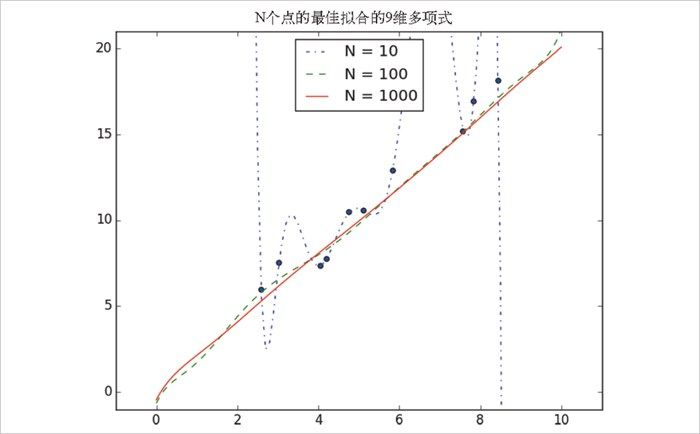

11.5 偏倚-方差权衡
思考过拟合问题的另一种角度是把它作为偏倚和方差之间的权衡。偏倚和方差这两个名词是用来度量在（来自同一个大型总体的）不同的训练数据集上多次重复训练模型的情况。
比如，在 11.3 节“过拟合和欠拟合”中提到的 0 阶模型对（取自同一总体的）任何可能的训练集都会造成大量的错误。这表明该模型偏倚 较高。然而任何两个随机选择的训练集会给出很相似的模型（因为任何两个随机选择的训练集都应该有大致相似的平均值）。所以我们称这个模型有低方差 。高偏倚和低方差典型地对应着欠拟合。
另一方面，9 阶模型完美地拟合训练集，它具有很低的偏倚和很高的方差（因为任何两个训练集都可能给出非常不同的模型形式）。这种情况对应过拟合。
如果你的模型有高偏倚（这意味着即使在训练数据上也表现不好），可以尝试加入更多的特征。从 0 阶模型到 1 阶模型就是一个很大的改进。
如果你的模型有高方差，那可以类似地移除 特征；另一种解决方法是（如果可能的话）获得更多的数据。

图 11-2：利用更多数据降低方差
在图 11-2 中，我们对不同大小的样本拟合了 9 阶多项式。如我们前面所见，基于 10 个点拟合的模型是一塌糊涂的。如果在 100 个数据点上训练，就会大大减少过拟合的问题。如果在 1000 个点上训练，看起来就像是 1 阶模型。
在模型复杂度不变的前提下，你有越多的数据，就越难过拟合。
另一方面，更多的数据对偏倚并不会有帮助。如果模型不能使用足够多的特征来捕捉数据的正则性，那么再多的数据也不会有帮助。